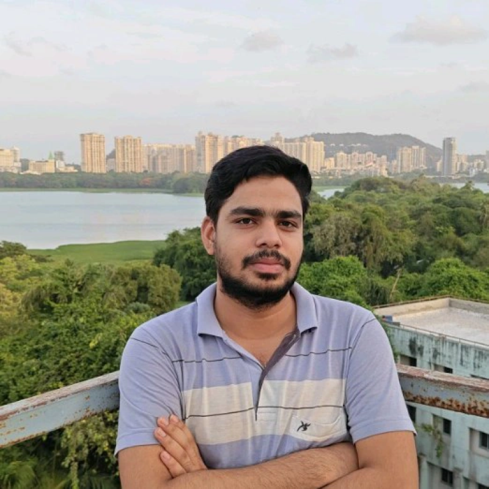

I am an MS by Research student in Computer Science and Engineering at the Indian Institute of Technology Bombay, advised by Professor Biplab Banerjee.
My research focuses on vision-language models, continual learning, multimodal reasoning, and parameter-space model consolidation. I am particularly interested in building AI systems that can learn continuously while preserving previously acquired knowledge.
Recently, our paper SCoT: Similarity-guided Conflict-aware Task Consolidation for Continual VQA has been accepted at ECCV 2026.
Earlier, I completed my B.Tech and developed a strong interest in deep learning, computer vision, and vision-language models. My long-term goal is to contribute to research in robust and continually learning multimodal AI systems.
